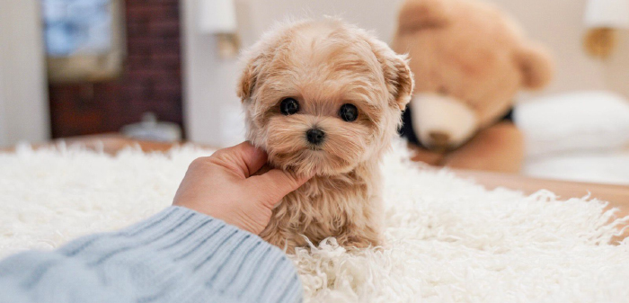

JPG Image Example
This is a JPG Image of a Teacup-Maltipoo. JPG's image are the most common formats for photographer. It has up to 16.7 millions color. I chose this image because it shows how cute a dog can be and how fluffy they can be. This particular dogs are very small and doesn't grow that much in size. I love this types of dogs and would love to own one when i live alone.